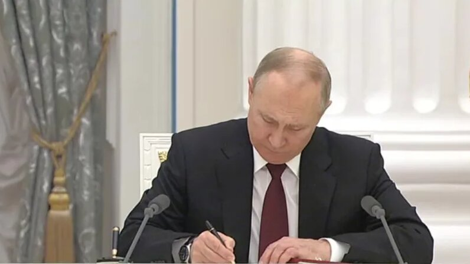
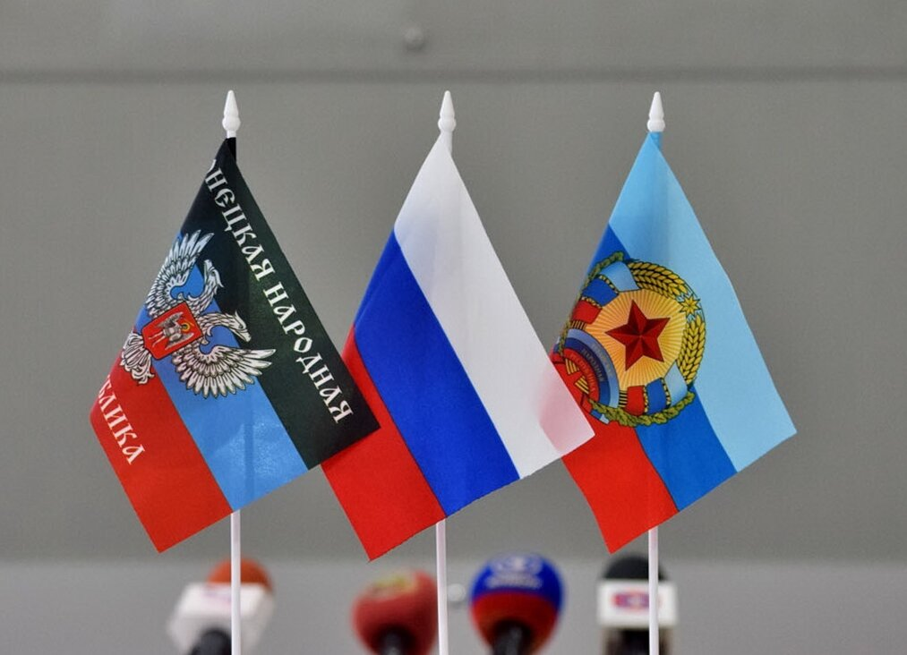

Президент России Владимир Путин согласился признать независимыми государствами Донецкую и Луганскую народные республики (ДНР и ЛНР).
«Считаю необходимым принять уже давно назревшее решение: незамедлительно признать независимость и суверенитет Донецкой народной республики и Луганской народной республики. Прошу Федеральное собрание Российской Федерации поддержать это решение, а затем и ратифицировать договор о дружбе и взаимопомощи с обеими республиками», — сказал президент.
По словам Путина, такое решение было принято в связи с тем, что Киев «пытается вновь организовать в Донбассе блицкриг, как это уже было в 2014 и 2015 годах». «Убийства мирных жителей, блокада, издевательства над людьми (...) не прекращаются. Как у нас говорят, конца и края этому не видно», — отметил глава государства. При этом он подчеркнул, что Россия «сделала все для сохранения территориальной целостности Украины», однако эти попытки оказались тщетны, поскольку «суть самого режима» на Украине не меняется.
Ранее, 21 февраля, состоялось внеочередное заседание Совета Безопасности России, в ходе которого все члены Совбеза выступили за признание независимости ДНР и ЛНР. В поддержку такого решения высказались, в частности, председатель правительства Михаил Мишустин, секретарь Совета Безопасности России Николай Патрушев, министр обороны Сергей Шойгу. Спикер Государственной Думы Вячеслав Володин призвал президента рассмотреть обращение нижней палаты парламента о признании независимости республик Донбасса, которое поддержал 351 парламентарий. Замглавы Совбеза Дмитрий Медведев также поддержал обращение ДНР и ЛНР, предположив, что Москва столкнется с сильным противодействием Запада, если признает их. Однако постепенно напряжение вокруг России будет спадать, считает он. Медведев напомнил, что Россия уже сталкивалась с подобной ситуацией в 2008 году, когда он, будучи президентом, подписал указ о признании Абхазии и Южной Осетии. По его словам, то решение позволило сохранить тысячи жизней.
